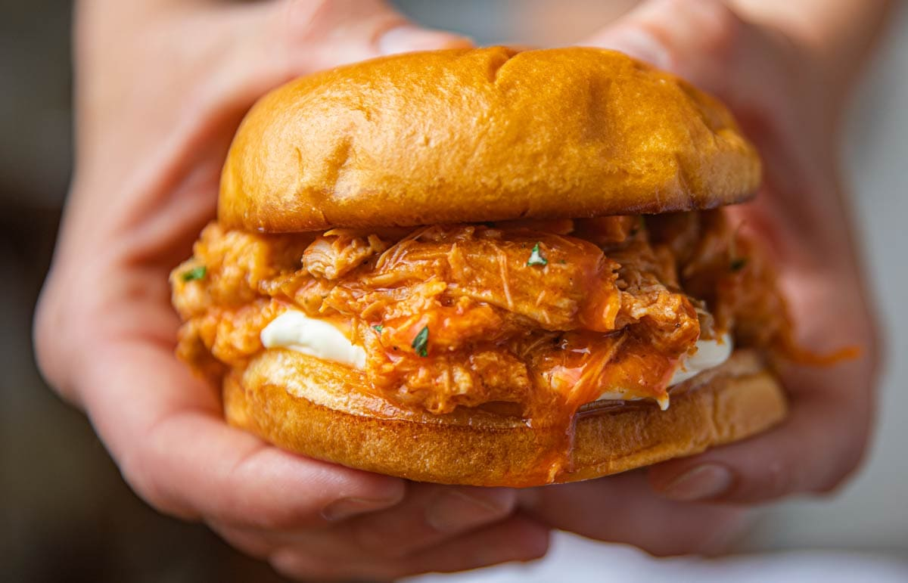

Buffalo Chicken Sandwich Recipe

Congratulations! You have made your way to one of the easiest, but most
delicious, meals you could ever imagine!
Buffalo Chicken Sandwich
Ingredients
- Thick White Bread
- 3 Chicken Breasts
- Cookies Buffalo Sauce
- Block of Cream Cheese
- Sliced Provolone Cheese
- Ranch (Side)
Steps
- Place chicken breasts in pressure cooker and set timer to 20
minutes. Press start.
- Once chicken is finished cooking, set out to cool for 10 minutes.
- Once cooled, shred chicken by hand or with cutlery.
- Place shredded chicken in to bowl, add full block of cream cheese, and
1 cup of Cookies Buffalo Sauce. Mix thoroughly.
- Place 1 slice of provolone cheese on bread,then add buffalo chicken
mixture.
- Place second piece of bread on top, butter both sides of sandwich, then
place full sandwich in panini press for 3 minutes.
- Once golden brown on both sides, serve with side of ranch.
- Enjoy!